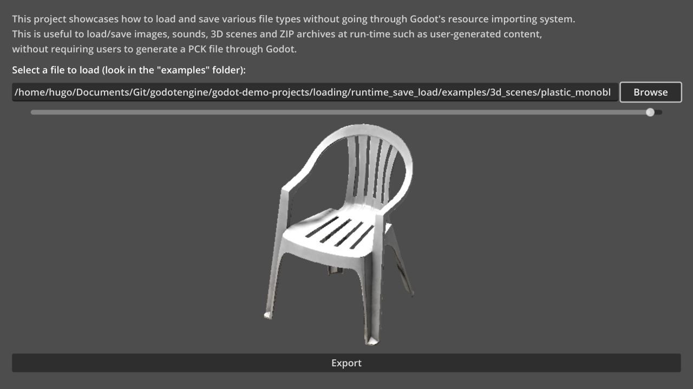
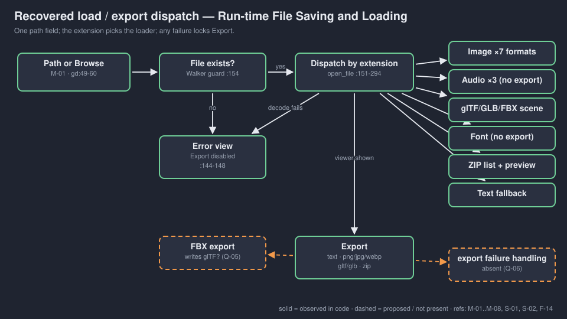
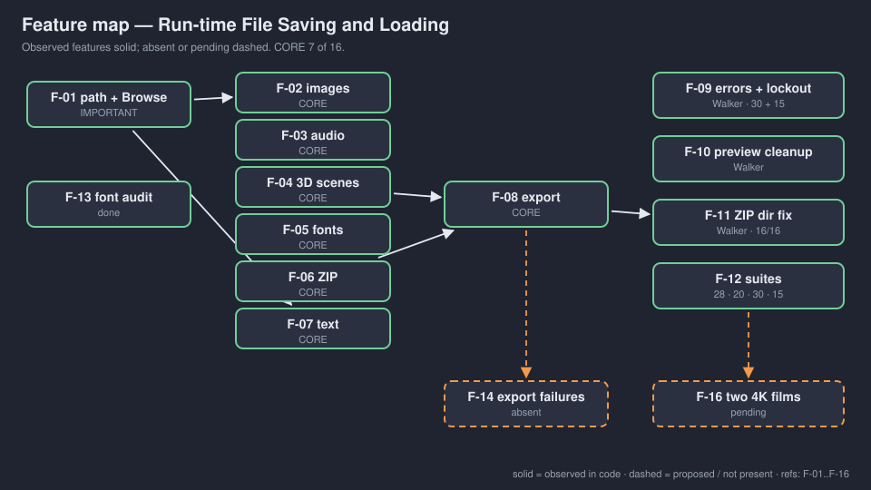

An independent copy of Godot's loading/runtime_save_load. A tech demo, not a game: a file viewer with an Export button.
OBSERVED in code INFERRED implied MISSING undecided
No gate signed. No human review. → GDD.md

INFERRED upstream screenshot (godot/README.md:45), not a Walker capture.

| Category | Load | Export |
|---|---|---|
| Images | JPG PNG WebP SVG TGA BMP | PNG JPG WebP |
| Audio | Ogg MP3 WAV | disabled |
| 3D | glTF GLB FBX | glTF GLB |
| Fonts | TTF OTF WOFF(2) PFB PFM FNT | disabled |
| ZIP / text | yes | yes |
OBSERVED runtime_save_load.gd:80-294
Q-04: teach these, or note them only?
loading · export round trips · missing files · corrupt files. OBSERVED logs.
Not verified: audio listening, image pixels on screen, 3D materials, FBX, export permission failures, films. Export checks call the handler directly, not captured UI.
CORE 7 of 16, over the 40% line. Tags left as they are (silent). Q-03 (1) retag text (and fonts) as IMPORTANT, or (2) keep seven and give the films the time.

Also R-02 INFERRED: FBX export filter offers .fbx but writes via GLTFDocument.
Walker changed this demo more than any other in the batch; say so. And never let "loads user files" drift into "safe for user files".